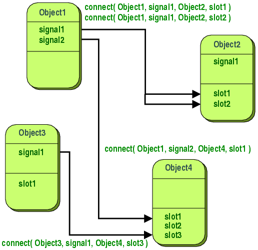

Сигналы и слоты
Сигналы и слоты используются для связи между объектами. Механизм сигналов и слотов - это основная особенность Qt и, вероятно, основная часть Qt, которая больше всего отличается по функциональности от других библиотек.
Введение
При программировании графического интерфейса пользователя мы часто хотим сообщать одним элементам об изменении других элементов управления. Более обобщенно можно сказать, что мы хотим обеспечить связь между объектами любых видов. Например, если пользователь нажимает кнопку Close мы, вероятно, хотим, чтобы была вызвана функция окна close().
Более старые инструментарии обеспечивают подобную связь с помощью функций обратного вызова. Обратный вызов - это указатель на функцию. Если вы хотите, чтобы функция обработки уведомила вас о некотором событии, вы передаете ей указатель на другую функцию (отзыв). Функция обработки вызовет функцию обратного вызова, когда это будет уместно. Но данный подход имеет два фундаментальных недостатка: во-первых, он не типобезопасен. Мы некогда не сможем проверить, что функция обработки вызывает отзыв с правильными аргументами. Во-вторых, этот метод жестко связан с функцией обработки, так как она должна знать, какой отзыв вызывать.
Сигналы и слоты
В Qt мы ввели технику, альтернативную функциям обратного вызова: мы используем сигналы и слоты. Сигнал испускается, когда происходит определенное событие. Виджеты Qt имеют множество предопределенных сигналов, и вы всегда можете создать их подклассы, чтобы добавить свои сигналы. Слот - это функция, вызываемая в ответ на определенный сигнал. Виджеты Qt имеют множество предопределенных слотов, но вы, и это стало общеиспользуемой практикой, можете создавать подклассы виджетов и добавлять свои слоты для того, чтобы обрабатывать поступающие сигналы, как того хотите.

Этот механизм типобезопасен: сигнатура сигнала должна соответствовать сигнатуре принимающего слота. (Фактически, слот может иметь более короткую сигнатуру, чем сигнал, который он получает, поскольку может игнорировать лишние аргументы.) Сигналы и слоты связаны без нежёстко: Класс, испускающий сигналы, не знает и не интересуется, который из слотов получит сигнал. Механизм сигналов и слотов Qt гарантирует, что, если Вы соединили сигнал со слотом, слот будет вызываться с параметрами сигнала в нужный момент. Сигналы и слоты могут иметь любое количество аргументов любых типов. Они полностью типобезопасны.
Все классы, наследуемые от QObject или одного из его подклассов (например, QWidget) могут содержать сигналы и слоты. Сигналы испускаются при изменении объектом своего состояния, если это изменение может быть интересно другим объектам. Все объекты делают это для связи с другими объектами. Их не заботит, получает ли кто-нибудь испускаемые ими сигналы. Это является истинной инкапсуляцией информации, и она гарантирует, что объекты могут использоваться как отдельные компоненты программного обеспечения.
Слоты могут получать сигнал, но они также являются обыкновенными функциями-членами. Также, как объект не знает, получает ли кто-нибудь сигналы, испускаемые им, слоты не знают, существуют ли сигналы, с ними связанные. Это гарантирует, что можно создать полностью независимые Qt компоненты.
Вы можете присоединять к одному слоту столько сигналов, сколько вам будет нужно, и один сигнал может быть соединен со столькими слотами, сколько вам требуется. Даже возможно соединять сигнал непосредственно с другим сигналом. (Второй сигнал будет испускаться немедленно всякий раз, когда испускается первый.)
Вместе сигналы и слоты представляют собой мощный механизм компонентного программирования.
Небольшой пример
Минимальная декларация класса C++ может выглядеть следующим образом:
class Counter
{
public:
Counter() { m_value = 0; }
int value() const { return m_value; }
void setValue(int value);
private:
int m_value;
};
Небольшой класс, основанный на QObject, может выглядеть так:
#include <QObject>
class Counter : public QObject
{
Q_OBJECT
public:
Counter() { m_value = 0; }
int value() const { return m_value; }
public slots:
void setValue(int value);
signals:
void valueChanged(int newValue);
private:
int m_value;
};
Версия класса, основанная на QObject, имеет то же самое внутреннее состояние и предоставляет открытые методы для доступа к нему, но в дополнение к этому она поддерживает компонентное программирование с использованием сигналов и слотов. Этот класс, испустив сигнал valueChanged(), может сообщать вовне, что его состояние изменилось, и имеет слот, которому другие объекты могут посылать сигналы.
Все классы, содержащие сигналы и слоты, должны упомянуть макрос Q_OBJECT в начале своей декларации. Также они должны происходить (прямо или косвенно) от QObject.
Слоты реализуются программистом. Вот возможная реализация слота Counter::setValue():
void Counter::setValue(int value)
{
if (value != m_value) {
m_value = value;
emit valueChanged(value);
}
}
Строка, содержащая emit, заставляет объект испустить сигнал valueChanged() с новым значением, переданным в аргументе.
В следующем фрагменте кода мы создаем два объекта Counter и соединяем сигнал первого объекта valueChanged() со слотом второго объекта setValue(), используя QObject::connect():
Counter a, b;
QObject::connect(&a, SIGNAL(valueChanged(int)),
&b, SLOT(setValue(int)));
a.setValue(12); // a.value() == 12, b.value() == 12
b.setValue(48); // a.value() == 12, b.value() == 48
Вызов a.setValue(12) заставляет a испускать сигнал valueChanged(12), который будет получен объектом b через слот setValue(), т.е. будет вызвана функция b.setValue(12). Затем b сам испустит сигнал valueChanged(), но так как никто не связан с объектом b через сигнал valueChanged(), он будет проигнорирован.
Обратите внимание на то, что функция setValue() устанавливает значение и испускается только в том случае, если value != m_value. Это предотвращает бесконечный цикл при циклических соединениях (например, если бы b.valueChanged() был соединён с a.setValue()).
Сигнал испускается для каждого соединения, которое было создано; если сигнал соединен с двумя слотами, то он будет испущен дважды. Также вы можете разорвать соединение с помощью QObject::disconnect().
Данный пример иллюстрирует совместную работу объектов, которые ничего не знают друг о друге. Для её достижения объекты должны быть соединены с помощью вызова простой функции QObject::connect() или посредством функции uic'а - автоматическим связыванием.
Сборка примера
Препроцессор C++ заменяет или удаляет ключевые слова signals, slots и emit для того, чтобы компилятору был предоставлен код, соответствующий стандарту C++.
С помощью moc обрабатываются определения классов, содержащих сигналы и слоты, и генерируются файлы реализации C++, которые будут скомпилированы и связаны с другими объектными файлами приложения. Если вы используете qmake, то в make-файл будет автоматически добавлен вызов moc.
Сигналы
Сигналы испускаются объектом, когда изменяется его внутреннее состояние, и если это может быть интересно его клиентам или владельцу. Только классы, содержащие определения сигналов, и их подклассы могут испускать сигналы.
При испускании сигнала слоты, с ним связанные, исполняются немедленно, так же, как при обычном вызове функции. Когда это случается, механизм сигналов и слотов полностью независим от цикла обработки событий графического интерфейса пользователя. Выполнение кода, следующего за выражением emit продолжится, как только завершится выполнение всех слотов. В случае с очередями соединений ситуация несколько отлична; при этом исполнение кода, следующего за emit, продолжится немедленно, а слоты будут исполнены несколько позже.
Если несколько слотов связаны с одним сигналом, то при испускании сигнала они будут выполнены один за другим в произвольном порядке.
Внимание! Сигналы автоматически генерируются утилитой moc, и вы не должны включать их реализацию в .cpp файлы. Они не должны иметь возвращаемых типов (т.е. использовать void).
Замечание про аргументы: наш опыт показывает, что сигналы и слоты более пригодны для повторного применения, если они не используют специальных типов. Если сигнал QScrollBar::valueChanged() должен использовать специальный тип, такой как гипотетический QScrollBar::Range, он может быть соединен только со слотами, спроектированными специально для QScrollBar.
Слоты
Слот вызывается как только испускается соединенный с ним сигнал. Слоты - это обычные функции C++, они могут вызываться обычным образом; их единственная особенность - это то, что к ним могут быть присоединены сигналы.
Так как слоты являются обычными функциями-членами, они имеют права доступа, подобные обычным функциям-членам. Вместе с тем, в качестве слотов они могут быть вызваны любым компонентом независимо от уровня доступа посредством соединения сигнал-слот. Это означает, что сигнал, испускаемый объектом произвольного класса, может быть связан с закрытым (private) слотом и быть вызван в совершенно постороннем классе.
Вы также можете определять виртуальные слоты, что мы находим очень полезным на практике.
По сравнению с обратными вызовами, сигналы и слоты немного медленнее в связи с большей гибкостью, которую они предоставляют, но для реальных приложений это различие несущественно. Вообще, испускание сигнала, связанного с некоторыми слотами, примерно в десять раз медленнее, чем вызов невиртуальной функции приемника непосредственно. Так происходит, потому что требуется безопасно перебрать все соединения (т.е. проверить, чтобы последующие приемники не были разрушены во время испускания сигнала) и передать параметры положенным образом. Хотя "десять вызовов невиртуальных функций" кажется долгим, это меньше чем, например, операция new или delete. Если вы обрабатываете строку, вектор или список, то есть операции, которые требуют вызова new или delete, обработка сигналов и слотов становятся не самыми активными потребителями времени.
То же самое происходит, когда система вызывает слот или косвенно вызываются более десятка функций. На i586-500 вы можете генерировать около 2,000,000 сигналов, связанных с одним слотом, в секунду, или около 1,200,000 сигналов, связанных с двумя слотами, в секунду. Простой и гибкий механизм сигналов и слотов является хорошей оболочкой для внутренней реализации, которую пользователи даже не будут замечать.
Обратите внимание на то, что другие библиотеки, определяющие переменные с именем signals или slots, могут вызвать предупреждения и ошибки при компиляции с приложением, созданным на основе Qt. Решить эту проблему может директива препроцессора #undef.
Мета-объектная информация
Мета-объектный компилятор (moc) просматривает декларацию класса в файле C++ и генерирует код, инициализирующий мета-объект. Мета-объект содержит имена всех сигналов и слотов и указатели на их функции.
Мета-объект содержит дополнительную информацию, такую как имя класса объекта. Также вы можете проверить, является ли объект наследником определённого класса, например:
if (widget->inherits("QAbstractButton")) {
QAbstractButton *button = static_cast<QAbstractButton *>(widget);
button->toggle();
}
Информация мета-объекта также используется в qobject_cast<T>(), который подобен QObject::inherits(), но менее подвержен ошибкам:
if (QAbstractButton *button = qobject_cast<QAbstractButton *>(widget))
button->toggle();
Для получения более подробной информации смотрите Систему мета-объектов.
Реальный пример
Далее приведен простой пример виджета.
#ifndef LCDNUMBER_H
#define LCDNUMBER_H
#include <QFrame>
class LcdNumber : public QFrame
{
Q_OBJECT
LcdNumber наследует QObject, который использует сигналы и слоты через QFrame и QWidget. Он немного похож на встроенный виджет QLCDNumber.
При расширении препроцессором, макрос Q_OBJECT декларирует несколько функций-членов, которые реализуются moc; если вы получили сообщения об ошибках компилятора, подобные "undefined reference to vtable for LcdNumber", вы, вероятно, забыли запустить moc или включить вывод moc в команду link.
public:
LcdNumber(QWidget *parent = 0);
moc явно не требует этого, но если вы наследуете QWidget, почти наверняка захотите иметь аргумент parent в вашем конструкторе и передать его в конструктор базового класса.
Некоторые деструкторы и функции-члены здесь опущены; moc игнорирует их.
signals:
void overflow();
LcdNumber испускает сигнал, когда его просят показать неверное значение.
Если вы не заботитесь о том, выходит ли значение за установленные пределы, или считаете, что оно не может за них выйти, можете игнорировать сигнал overflow(), т.е. не соединять с ним ни какой слот.
Если вы, напротив, хотите вызвать две функции при выходе значения за пределы диапазона, соедините сигнал с двумя слотами. Qt вызовет их оба (в произвольном порядке).
public slots:
void display(int num);
void display(double num);
void display(const QString &str);
void setHexMode();
void setDecMode();
void setOctMode();
void setBinMode();
void setSmallDecimalPoint(bool point);
};
#endif
Слот обычно используется для получения информации об изменении состояния других виджетов. LcdNumber использует эту возможность, код, приведенный выше, показывает, как отобразить измененное значение. Так как display() является частью интерфейса между классом и остальной частью программы, то он является открытым (public) слотом.
В некоторых из примеров программ сигнал valueChanged() объекта QScrollBar соединяется со слотом display(), в результате LCD-номер непрерывно отображает значение полосы прокрутки.
Обратите внимание на то, что display() перегружена; Qt выберет соответствующую версию во время соединения сигнала со слотом. При использовании обратных вызовов вы должны были бы завести пять различных названий и отслеживать используемые типы самостоятельно.
Некоторые несущественные функции-члены в данном примере были опущены.